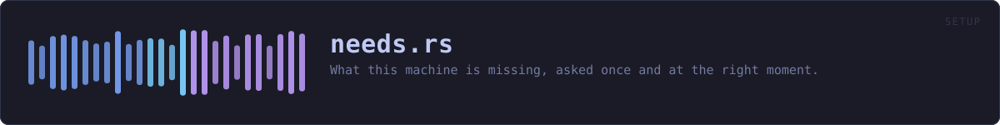

crates/veilvoice-setup/src/needs.rs
veilvoice-setup · 565 lines · read the source here · or on GitHub
What this machine is missing, asked once and at the right moment.
Roadmap item 163. Three things need ffmpeg: import, video and the Studio's render. Each of them found out at the moment it was used and printed the install line. That is the right refusal at the wrong time. Somebody learns their recording cannot be turned into a video after they have finished making it, which is the one point in the process where the answer is least useful and most annoying.
So the question is asked in one place, before anything depends on it, and the answer is one list rather than three separate discoveries.
What it asks, and what it does not
Three things:
- Is
ffmpeghere? Three commands need it and none of them can do their last step without it. - Is GnuPG here? Nothing in VeilVoice needs it, and that is the point: it is what lets somebody check a VeilVoice release with a program this project did not write, which is the only check that escapes the circularity of a download verifying itself.
- Is this copy installed, or running out of a folder?
The third is here rather than in crate::install because it belongs to the same question. Somebody running a portable copy who has not been told that portable is a supported choice will assume something went wrong, and somebody who meant to install and did not is a person whose next terminal will not find veilvoice. Both are facts about this machine, wanted at the same moment, and reporting them in one place is the whole of this module.
Nothing here changes anything, spawns anything, or reaches the network. Every probe is a PATH lookup or a file test. look is cheap enough to call at a launch, which is the only reason it can be called at one.
A no is remembered
Being asked the same question at every launch is how a prompt becomes something people dismiss without reading, and this project has already written that argument down about tamper alarms. So a decline is recorded, per companion, in a file the reader can open and delete: see declined.
It is per companion rather than one switch. Somebody who does not want ffmpeg has said nothing about GnuPG, and treating the two as one answer is putting words in their mouth.
A decline is not a claim that the software is absent or unwanted for ever. look still reports what is there; what a decline suppresses is the offer. veilvoice companions shows everything regardless, because somebody who types the name of the thing is asking.
In plain words
Checks once, when VeilVoice starts, whether the few optional things are here, instead of finding out when you are halfway through something.
If you say no to one of them, it remembers, and does not ask again. The answer is kept in a small text file you can read and delete.
WHAT THIS FILE CONTAINS
565 lines defining 13 functions (10 public), 3 types and 2 constants. Everything below is read out of the source, so it cannot disagree with the code.
The types it owns.
enum Runningline 98 · Whether this copy is installed, and whether it is the one running.struct Absentline 152 · One thing this machine has not got, and what could be done about it.struct Checkline 165 · What one look at this machine found.
What happens when it runs. These are the ways in: public, and nothing else in this file calls them, so they are what an outside caller reaches first.
declined_fileline 72 · The file a decline is remembered in.Running::describeline 117 · A line for a reader, which never calls portable a problem.Running::worth_sayingline 142 · Whether anything here is worth putting in front of somebody.Check::worth_showingline 183 · Whether there is anything a reader should be shown at a launch.lookline 198 · Look at this machine.
reachesdeclined,running,path,exe_namedeclineline 302 · Remember that this one is not wanted.
reachesdeclined,write,path,ask_again_about_everythingask_againline 315 · Ask about this one again.
reachesdeclined,write,path,ask_again_about_everything
WHAT CALLS WHAT
The functions this file defines, and the calls between them. An edge means the callee's name appears, called, inside the caller's body. This is a syntactic reading, not a type-resolved one.
The same graph as Mermaid source
%%{init: {"theme":"base","themeVariables":{"background":"#1a1b26","primaryColor":"#1f2335","primaryTextColor":"#c0caf5","primaryBorderColor":"#7aa2f7","secondaryColor":"#16161e","tertiaryColor":"#16161e","lineColor":"#737aa2","textColor":"#c0caf5","mainBkg":"#1f2335","nodeBorder":"#7aa2f7","clusterBkg":"#16161e","clusterBorder":"#2f3549","fontFamily":"ui-monospace, SFMono-Regular, Consolas, monospace","fontSize":"14px"}}}%%
flowchart TD
n_declined_file(["declined_file<br/>line 72"])
n_describe(["Running::describe<br/>line 117"])
n_worth_saying(["Running::worth_saying<br/>line 142"])
n_worth_showing(["Check::worth_showing<br/>line 183"])
n_look(["look<br/>line 198"])
n_running["running<br/>line 235"]
n_exe_name["exe_name<br/>line 259"]
n_path["path<br/>line 274"]
n_declined["declined<br/>line 284"]
n_decline(["decline<br/>line 302"])
n_ask_again(["ask_again<br/>line 315"])
n_ask_again_about_everything["ask_again_about_everything<br/>line 328"]
n_write["write<br/>line 340"]
n_ask_again --> n_declined
n_ask_again --> n_write
n_ask_again_about_everything --> n_path
n_decline --> n_declined
n_decline --> n_write
n_declined --> n_path
n_look --> n_declined
n_look --> n_running
n_running --> n_exe_name
n_write --> n_ask_again_about_everything
n_write --> n_path
click n_declined_file href "https://github.com/tilas01/veilvoice/blob/main/crates/veilvoice-setup/src/needs.rs#L72" "open the source"
click n_describe href "https://github.com/tilas01/veilvoice/blob/main/crates/veilvoice-setup/src/needs.rs#L117" "open the source"
click n_worth_saying href "https://github.com/tilas01/veilvoice/blob/main/crates/veilvoice-setup/src/needs.rs#L142" "open the source"
click n_worth_showing href "https://github.com/tilas01/veilvoice/blob/main/crates/veilvoice-setup/src/needs.rs#L183" "open the source"
click n_look href "https://github.com/tilas01/veilvoice/blob/main/crates/veilvoice-setup/src/needs.rs#L198" "open the source"
click n_running href "https://github.com/tilas01/veilvoice/blob/main/crates/veilvoice-setup/src/needs.rs#L235" "open the source"
click n_exe_name href "https://github.com/tilas01/veilvoice/blob/main/crates/veilvoice-setup/src/needs.rs#L259" "open the source"
click n_path href "https://github.com/tilas01/veilvoice/blob/main/crates/veilvoice-setup/src/needs.rs#L274" "open the source"
click n_declined href "https://github.com/tilas01/veilvoice/blob/main/crates/veilvoice-setup/src/needs.rs#L284" "open the source"
click n_decline href "https://github.com/tilas01/veilvoice/blob/main/crates/veilvoice-setup/src/needs.rs#L302" "open the source"
click n_ask_again href "https://github.com/tilas01/veilvoice/blob/main/crates/veilvoice-setup/src/needs.rs#L315" "open the source"
click n_ask_again_about_everything href "https://github.com/tilas01/veilvoice/blob/main/crates/veilvoice-setup/src/needs.rs#L328" "open the source"
click n_write href "https://github.com/tilas01/veilvoice/blob/main/crates/veilvoice-setup/src/needs.rs#L340" "open the source"
classDef entry fill:#1f2335,stroke:#7aa2f7,color:#c0caf5
class n_declined_file,n_describe,n_worth_saying,n_worth_showing,n_look,n_decline,n_ask_again entry
classDef api fill:#1f2335,stroke:#7dcfff,color:#c0caf5
class n_path,n_declined,n_ask_again_about_everything api
classDef helper fill:#1f2335,stroke:#bb9af7,color:#c0caf5
class n_running,n_exe_name,n_write helperThis site loads no third-party script, so it cannot run Mermaid; the diagram above is the same nodes and edges drawn by the generator instead. GitHub renders the source below directly.
ITEMS
| Item | Line | Documentation |
|---|---|---|
declined_file pub fn | 72 | The file a decline is remembered in. |
PREAMBLE pub const | 81 | What is written at the top of that file, so it explains itself. |
Running pub enum | 98 | Whether this copy is installed, and whether it is the one running. |
Running::describe pub fn | 117 | A line for a reader, which never calls portable a problem. |
Running::worth_saying pub fn | 142 | Whether anything here is worth putting in front of somebody. |
Absent pub struct | 152 | One thing this machine has not got, and what could be done about it. |
Check pub struct | 165 | What one look at this machine found. |
Check::worth_showing pub fn | 183 | Whether there is anything a reader should be shown at a launch. |
WANTED pub const | 195 | The companions a launch asks about, by key. |
look pub fn | 198 | Look at this machine. |
running fn | 235 | Which copy of VeilVoice is running. |
exe_name fn | 259 | The command line's file name on this platform. |
path pub fn | 274 | Where the declines are remembered, or None on a platform that names nowhere. |
declined pub fn | 284 | The companions a decline has been recorded for. |
decline pub fn | 302 | Remember that this one is not wanted. |
ask_again pub fn | 315 | Ask about this one again. |
ask_again_about_everything pub fn | 328 | Ask about everything again, by removing the file rather than emptying it. |
write fn | 340 | Write the set, preamble and all. |